RackTrackHandbook - 20 September 2026Written from the code, the history and the running system
01 - The product
A rack photograph, turned into something a record can be checked against
A data centre keeps its truth in three places that never agree: the equipment bolted into the cabinet, what the switches say about themselves, and what the asset record claims. RackTrack reads the first with a camera, asks the second over the network, compares both with the third - and makes a person decide before anything is written down.
3sources of truth, joined
6trained vision models
16kinds of record written
0records ever deleted
The three witnesses, and what each one actually knows
The three rules the whole product is built on
Nothing is invented
A value no source stated is never written, and never cleared on the way past. An empty shelf is not a device. A guess is shown as a guess and stops there.
Nothing is deleted
There is no delete path to a customer's record anywhere in the product. Equipment that has vanished from a rack is reported for a person to judge, never removed.
Nothing is written to a switch
The network layer implements reading only. The write command was deliberately left out, so the guarantee is structural rather than a matter of discipline.
Three applications, one server, one sign-in
The field application
Android, iPhone, and the same thing in a browser. Photograph a rack, read its switches, see what differs, hand it on. This is the technician's whole world, and it is kept uncluttered on purpose.
RackTrack Changes
The desk half: triage, assignment, tickets, approvals, clocks, reports, exceptions and the audit trail. Its own screens, but the same server, database and sign-in, so it opens already signed in.
The owner and manager portal
For the people who run RackTrack for an organisation: what has been scanned and by whom, which switches answered, who holds which role. It watches and manages. It deliberately does not decide.
Who does what, and what each person cannot do
Person
What they do
What they cannot do
Technician
Photographs the rack, reads its switches, checks the result against the record, hands the differences to their admin.
Approve, reject, assign or write anything.
Admin
Hands each difference to a named person, waits for the answer, decides, and runs the write.
Approve before the answer comes back, or leave a difference assigned to nobody.
Assignee
Goes to the rack, checks it, and reports what is actually true.
Change the record. A resolved ticket writes nothing by itself.
Approver
Signs off the changes that will be written.
Approve anything they resolved themselves. On a critical plan, be the only signature.
Auditor
Reads everything: plans, tickets, reports, the audit trail.
Write anything at all, including a comment.
Owner
Runs the platform, approves new organisations, holds the connection credentials.
Take part in an organisation's approvals - the owner belongs to no organisation.
The path a rack takes, from cabinet to record
02 - Every feature
The whole product on one page, with its honest status
Every feature RackTrack has today, where it is described in this handbook, and what state it is actually in. Nothing here is aspirational: where something is built but has no screen, or works but was taken out of the menu, it says so. Click any row to go to it.
64features described
50live and in use
12live but partly built
5withdrawn, and why
Reading a rack
Feature
In one line
Status
One picture, a video panned across a row, or several shots of a tall rack - in any format a phone produces
Live
Tilt, angle, letterboxing and cable clutter judged before anything is analysed
Live
The rack's own shelf numbering, read from the cabinet rather than tiled down the picture
Live
Every box placed and named across twelve kinds of equipment
Live
Socket type and occupancy answered by two separate models, numbered as the faceplate is printed
Live
Make, model, firmware and the rack's own label, including the chips on the rails
Live, weakest link
Fourteen colours and connector families, never allowed to decide occupancy
Live
Several shots joined by their edges; a panned video split per cabinet
Live, one honesty gap
Re-run an old photograph under today's models without losing corrections
Live
Type a port number, have it ringed on the photograph
Live
The rack drawn as an elevation and as a model you can turn
Live
Knowing what it is looking at
Feature
In one line
Status
Six rungs, only two of which may state a rack outright
Live
Which building, never which cabinet - and it can only downgrade a match, never make one
Live
Identity as a set of hardware addresses, so one switch never becomes two
Live
Three signals, a plain-language reason, and a person to confirm it
Live
Two identical switches told apart by the pattern of cables on their faces
Live
Kept against the rack, so it outlives the photograph it was given about
Live
What differs, in three plain phrases, with no write button anywhere on it
Live
Asking the equipment
Feature
In one line
Status
The phone asks, because the server cannot reach a customer's private network
Live
Four families of standard questions, identical on every vendor
Live
A list per rack, encrypted, write-only, and testable in a second
Live
What no protocol can read, recorded by a person from the photograph
Built, no screen
A per-port timeline of what changed and when
Live
The running version against what the vendor publishes, with honest non-answers
Live
Every device and every port in one document, including what could not be checked
Live
Asking a discovery system what is on the wire right now
Not in the menu
What one port can see, and the plain statement that a panel cannot be asked
Live, partly built
Real and virtual test switches, for proving what the product gets back
Owner only
Datasheet figures and the right transceiver for an identified switch
Live
The customer's record
Feature
In one line
Status
Read-only, and it says so when it cannot recognise its own records yet
Live
Evidence travels with every value and decides what the record is told
Live
Never names the wrong one, and refuses a tie by naming both
Live
Adds our reference and fills gaps; never renames, moves or re-types what is theirs
Live
"That already exists" treated as the ordinary case, with four guards
Live
A renumbered rack written into a database that checks one change at a time
Live
Equipment the record holds and the scan did not see - reported, never removed
Live
Four things true first, half-writes handled, and a re-scan to prove it landed
Live
A port is the number printed beside it, not its place in a list
Live
The same rack written into a service management system, gap by gap
Live
Type an address; the type and fields fill themselves in
Live
Metadata, private and unencrypted addresses refused, every redirect re-judged
Live
Stored once per organisation, encrypted, and never readable again
2 of 6 kinds used
Deciding and writing
Feature
In one line
Status
The difference, the job, and the permission are never the same thing
Live
To the person the record names, with one ticket per thing rather than per scan
Live
A port follows its device; supporting records are not decisions
Live
Whoever resolved it cannot approve it, and critical plans need two signatures
Live
A fresh scan before the approval and after the write
Live
Four timers in the data centre's own working hours, with real pauses
Live
What is deliberately different, for how long, and who owns it
Live
Eight reports where every number opens the list it counts
Live
Running it
Feature
In one line
Status
Ten steps, one at a time, admin only, everything editable afterwards
Live
Six roles, scope decided on the server, a miss answers "not found"
Live
Its own address, the same server and session, sixteen pages
Live
Thirteen screens for triage, tickets, approval, reports and audit
Live
What is happening across every customer, and the server's own diary
Owner only
Every scan kept, searchable, the same on any device
Live
Print-ready file, data, message, email, or a short-lived link
Live
One honest file per rack holding only what the scan produced
Built, no screen
Type a rack's truth in the record system's own field names
A tool, not a screen
Open a request, write only once it is approved
Live, partly built
Access is given, never requested; invitations expire in seven days
Live
Answers from RackTrack's own written material, or declines
Knowledge is stale
Corrections stick and help the next photograph; retraining has promoted nothing yet
Half live
Sell surplus, post wanted items, or hand off to an outside marketplace
Live, partly built
Withdrawn, and why
Five things that were in the product and are not any more. They are listed because the older documentation still describes them, and because a demonstration should never show something that no longer exists.
What it was
Why it went
When
Ground Truth
An unfinished screen that quoted an accuracy figure. 183 devices of 4,247 detected had ever been judged, and the figure read as though it covered the whole product. The corrections, the log and the learning behind it were all kept - only the screen went.
18 Sep 2026
The live Ports screen
It read a switch from the server over a remote shell, which on any real customer network could not reach the switch at all. Reading switches moved to the phone, and the Network step replaced it.
4 Sep 2026
Available ports
Part of the same screen, and it went with it. The count of free sockets is still in the report and on the switch card.
4 Sep 2026
The standalone specifications tool
Folded into the switch card, where a make and model are already known, rather than kept as a separate lookup.
26 Aug 2026
In-app approvals
Moved to the Changes application so the scanning application stays about scanning. The old addresses show a notice and a link across.
18 Sep 2026
One consequence worth acting on: the in-app help still carries entries written in July that describe two of these as current.
03 - Capture
Turning one photograph into a shelf-by-shelf inventory
A person points a phone at an open cabinet and takes one picture. What comes back is every shelf numbered the way the data centre numbers it, every box placed on its shelf, every socket counted and typed, and every label that could be read - with an honest gap wherever the photograph could not answer.
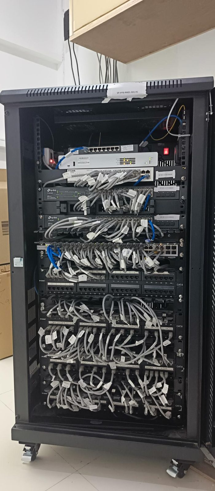
What goes in. One photograph of the open cabinet, taken on a phone.
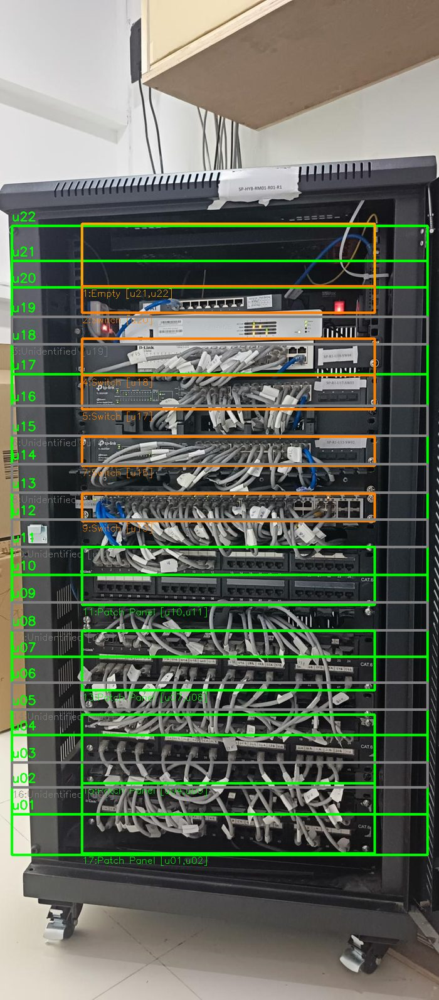
What the models see. The cabinet frame, each shelf as its own band, and each box where it actually sits.
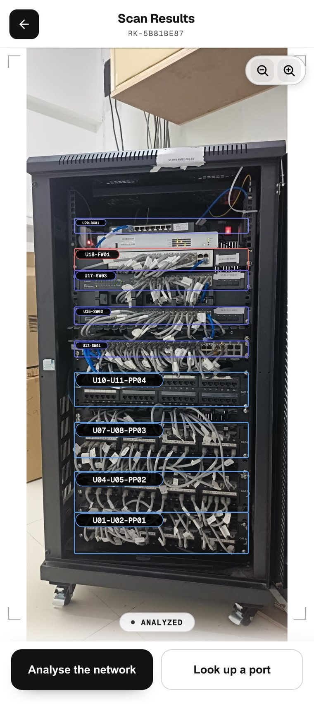
What the person sees. Every box named by its shelf, the way the rack itself is numbered.
03.1
Taking the photograph
Live
One picture of an open cabinet, taken on the phone that is already standing in front of it - or a video panned across a row, or several shots of a rack too tall for one frame.
How it works
The camera opens on the scan screen with the room already chosen, so the picture is filed against the right place from the start. Any format a phone or a gallery can produce is accepted, and the file is judged by its contents rather than its name - an Android gallery pick often arrives with no name at all. Rotation from the phone's own sensor is applied once and then discarded so nothing can rotate it twice.
Why it is there
The whole product rests on somebody being willing to take one picture instead of filling in a spreadsheet. Anything that makes them retake it - a format that will not open, a picture that lands sideways - costs more than it saves.
Where it stops
Two picture formats depend on an optional component; without it those two fail with a message that says so, and everything else still works.
03.2
Refusing a photograph that cannot answer honestly
Live
A quality check made before anything is analysed, so a picture that cannot produce a truthful answer is not quietly turned into one.
How it works
Four things are measured on the image itself: black bands down the sides that mean a screenshot, a tilt beyond about six degrees, rails that disagree about where the cabinet is, and a shot taken so far to one side that the shelves converge. Cable clutter is judged separately by a trained classifier. A warning lets the person carry on; only severe clutter asks for another picture, and offers to take the rack in sections.
Why it is there
The obvious rule of thumb for clutter misfires both ways - a rack of brightly labelled equipment reads as clutter, while a wall of grey cables barely registers - so it was replaced by something trained on real racks.
Where it stops
These are judgements about an image made before anything in it is understood, so they are deliberately conservative. A warning is advice, and the person can always proceed.
03.3
Reading the shelves
Live
The rack's own shelf numbering, read from the cabinet rather than measured off one shelf and tiled down the picture.
How it works
A model trained on cabinets, rails and shelves finds the frame and each shelf as its own band. Overlapping bands are split down the middle so each keeps the height the model gave it, a gap worth a whole shelf is filled in, and the ladder is extended where the frame plainly continues - but never past a cross rail. Shelf one is the bottom row, which is the one place the model's order and the rack's numbering disagree.
Why it is there
A rack's shelves are identical in the real world, so tiling one height down the photograph looks right and is wrong: a camera is almost never square on, so near rows are taller in the image, the grid drifts as it descends, and boundaries end up slicing through the middle of a panel. Measured over 24 photographs, the model lands within a tenth of a shelf where the tiled grid was more than twice as far out.
Where it stops
The rules were tuned on tens of photographs, not hundreds. A cabinet photographed badly enough that the rails are invisible can still gain or lose a row at the very top or bottom. If the model finds nothing at all, the old tiled grid still runs, so a scan is degraded rather than lost.
03.4
Finding the equipment and saying what it is
Live
Every box in the cabinet, drawn where it sits and named by what it appears to be: switch, router, firewall, server, storage, patch panel, power strip, power supply, battery, closed unit or empty.
How it works
Detection runs on a copy of the photograph reduced by a whole factor, and the boxes are mapped back to full size, so a picture from any camera is read the same way. Each box is trimmed slightly to suppress its own border, and anything too small to be equipment is dropped. One rule is applied after the sockets are counted: a network box with fewer than ten sockets is a router, not a switch - and that rule reverses itself if the count later rises.
Why it is there
The detector only has the front of a box to go on, and small network boxes look like small switches. Counting the sockets is what settles it - so the rule lives in one place, and a person's own correction is never overwritten by it.
Where it stops
A blank filler panel, a closed unit and a dark box at the floor are all easy to get wrong. A box the classifier cannot name is recorded as unidentified rather than guessed at, and a box with no sockets found where sockets were expected is demoted rather than asserted.
03.5
Counting and numbering the sockets
Live
Every socket on a faceplate: what kind it is, whether something is plugged into it, and the number printed beside it.
How it works
Two models answer two separate questions. One says what kind of socket it is - copper, fibre, console, management, or a position with nothing fitted. The other says only whether something is plugged in. They are matched to each other by overlap, and a socket with no status reading stays unknown. Numbering follows how faceplates are actually printed: odd along the top, even along the bottom, column by column, and straight across for a panel.
Why it is there
Keeping type and occupancy apart is what stops one model's confidence being read as the other's answer. Patch panels got their own training for the same reason: they used to be read by the occupancy model pressed into service as a detector, which on one panel saw 31 sockets and invented 17.
Where it stops
Numbering is geometry, so a heavily angled or half-hidden faceplate can split the rows wrongly. Panels are snapped to the nearest standard size, which is an assumption that will be wrong on an unusual panel. Sockets hidden behind a bundle of cables are not counted, and are never assumed empty.
03.6
Reading the labels: make, model and the rack's own name
Live, weakest link
The text on a faceplate and on the rails - the make, the model, the firmware, the rack's label - read from the same photograph.
How it works
The whole picture is read once and each box is given the text that fell inside it. A brand is matched even when it is misread, so a smudged D-Link still resolves. A model is recognised by the shapes each vendor uses, and where the logo is unreadable the model pattern can imply the brand. The rail chips down the sides of a cabinet are read separately, because they are high-contrast, one per device, and they work even when the equipment itself was missed.
Why it is there
Labels are what tie a photograph to a customer's own naming. The rail chips are the highest-truth signal in the picture, and a chip with no equipment beside it becomes a visible gap rather than a silent miss.
Where it stops
This is the weakest input in the product and the most load-bearing. A failed read is usually a resolution problem rather than a legibility one, which is why walking up and photographing one label works. New vendors are taught by adding them to a list, never by changing the product.
03.7
Cable colour, and the honesty rule attached to it
Live
The colour and connector family of the cable in each occupied socket - fourteen kinds in all.
How it works
A classifier looks at each occupied socket and names the cable. It is only ever run on sockets the occupancy model already said were occupied.
Why it is there
Colour is how cabling standards are actually enforced on a rack, and how a person recognises a run they laid themselves.
Where it stops
It has fourteen answers and none of them is "no cable", so its confidence can be high on an empty crop. It is therefore never allowed to decide whether a socket is occupied - that answer comes only from the occupancy model, and a socket nobody measured stays unknown and says so.
03.8
A rack too tall for one photograph, and a row of cabinets
Live
Several vertical shots joined into one rack, or a video panned across a row split into one scan per cabinet.
How it works
Shots are joined by matching horizontal edges - cable rows, panel borders, indicator strips - rather than raw pixels, and the join is only accepted when it is clearly better than the alternatives. A panned video is sampled, split where the view genuinely moves on rather than where the hand shook, and the sharpest frame of each cabinet is analysed on its own.
Why it is there
Rack imagery is full of uniform dark regions where pixel matching flat-lines, while edges are unique per section and give a sharp join.
Where it stops
Both are heuristics and both can decline rather than guess. Joining assumes the shots differ mainly by height, so a rotated or zoomed shot will not seam; a set that fails is refused with the uncertain seams named rather than butted together silently. Two racks captured together are drawn with cables between them that are derived, not observed: a plausible handful of uplinks worked out from each rack's uplink-capable sockets. The code marks them as synthetic; the screen does not yet say so, and it should.
03.9
Reading the same photograph again, later
Live
An admin can ask for a rack to be read again by today's models, without losing anything a person corrected on it.
How it works
The whole folder is copied aside first. The new reading is matched to the old one box by box, by where each sits on the picture - the one thing a re-read cannot change - and everything filed against a shelf is carried across to the shelf it now belongs to: corrections somebody typed, label readings, the feedback history. If anything fails half way, the rack is put back exactly as it was and the message says so.
Why it is there
A rack is identified by a fingerprint of its photograph, so an analysed rack is a cache hit for ever. That is right for speed and wrong the day a model improves.
Where it stops
Two re-reads of one rack at the same time are refused, as is a rack whose photograph is not kept. A reading with no box to move to is left in the backup and named, never re-filed under a guess.
03.10
Finding one port in a dark aisle
Live
A ticket names one port; the technician has to put a finger on it. This rings that exact socket on the photograph.
How it works
Pick a device from the list or by tapping it in the picture, choose the kind of socket - only the kinds that device actually has are offered, with their counts - type a number, and the answer comes back as a close-up of that device with the socket ringed, the whole rack with the same socket highlighted, and whether it is occupied, with the cable's colour and connector.
Why it is there
Standing in a cold aisle counting sockets by torchlight is where mistakes happen, and it is the single most common thing a person actually needs from a rack photograph.
Where it stops
The count comes from reading the photograph, not from the switch. Where the models read no sockets at all it refuses to locate anything and asks for the true count first, rather than pointing at empty metal. It answers where port twelve is in this picture, never whether port twelve is live.
03.11
Seeing the rack drawn, flat and in three dimensions
Live
The scanned rack as an engineer's elevation, and as a model that can be turned and opened.
How it works
One snapshot is prepared after each scan and both drawings are made from it. The flat view is a front-on elevation with shelves numbered from the bottom, every device at its true height, empty shelves labelled and a coloured square per socket. The three-dimensional view builds the same rack on a floor that can be orbited and zoomed to a faceplate, with cables drawn as tubes and doors that swing open. Two racks captured together get one view across both.
Why it is there
A list of devices and shelf numbers is hard to hold in the head; a picture of the rack is not.
Where it stops
The devices, their shelves, their sizes and their socket counts are real, read from the photograph. The wiring between them is a best guess and is labelled as such - which port joins which, and cable lengths, are inferred unless somebody supplied a checked list.
04 - Identity
Which rack is this, and which box is which
A comparison a person cannot trace to a named record in the customer's own database is an assertion, not a check. Before anything is compared, RackTrack has to answer two questions it is not allowed to guess at: which of their racks this photograph is of, and which of their records each box in it is.
The rack ladder
Six rungs, tried in order, stopping at the first that leaves exactly one rack. Only two of them may state a rack outright. The rest may only suggest, and wait for a person.
04.1
Recognising the rack
Live
Tying a photograph to the customer's own rack record, so the contact, the ticket and the write all name the real rack rather than a photograph.
How it works
A scan is tied to a room when the picture is taken. The room holds the racks an admin typed in. A match is made only when it is unambiguous, and the rack is then looked up in the customer's record by their own rack identifier first and by name second. The key everything else is built on comes from the database row, never from anything typed, so two customers who both name a rack the same way can never merge.
Why it is there
A photograph identifies itself only by its own fingerprint, which is never the name the customer's record uses. Without this step, every ticket and every write lands on a rack that exists nowhere but here.
Where it stops
With no site to look inside, nothing is looked up at all - not even the customer's own rack identifier - because the same rack name is used at every site there is. Anything unclear stays unresolved rather than being picked between.
04.2
Where the photograph was taken
Live
A check on which building a scan came from, added to the ladder as the last word - and deliberately never allowed to pick a rack.
How it works
The phone's position is asked for when the scan screen opens, so a permission prompt never holds up an upload, and it travels with the picture. Within 300 metres of the site's address counts as here, widened to twice whatever accuracy the phone itself reported. A reading only good to worse than two kilometres is discarded as saying nothing. Taken at another of the organisation's sites, the verdict names that site.
Why it is there
Every other rung looks for the rack inside the scan's own site. A scan filed under one data centre but photographed in another can still read a label like "Rack 1" and match the wrong city's Rack 1.
Where it stops
Indoors a phone knows its position to tens of metres, which cannot tell one cabinet from the next. It answers which building and nothing more, and a person's own confirmation is never overruled by it - they were standing there.
04.3
Who a device is
Live
Deciding that two readings are the same piece of equipment - without splitting one switch into two, or merging two into one.
How it works
A reading carries the whole set of what the equipment published about itself: serial, chassis address, bridge address, management address. Two readings are the same device only when they share a strong one. A name or a management address is never enough on its own.
Why it is there
In your own office, keying on the best single field split one switch into two: the phone read a serial from the vendor's private branch while the server read a chassis address from the same switch. Keying on the whole set, they overlap, and one switch stays one switch.
Where it stops
A name and a management address are configuration and both get reused, so they never establish identity. An identifier that turns out to be a model string rather than a hardware address is refused, because minting an identity from it merges two switches into one.
04.4
Matching a switch to a box in the picture
Live
Joining what the camera saw to what the network said, and being honest that a port count is not a serial number.
How it works
Three independent signals are scored with a plain-language reason: the model string, the make, and how closely the socket counts agree. The proposal is shown with its reasoning, and a person confirms it. Once confirmed, the switch's own facts replace the camera's guesses and the camera's shelf position is kept, because the switch cannot know where it sits.
Why it is there
The camera knows where and guesses what; the switch knows what and has no idea where. The one shared handle - how many sockets - is not unique the moment a rack holds two identical switches.
Where it stops
A match nobody confirmed is shown on screen and put into no record. Two identical switches agree with each other exactly as well as either agrees with itself, so a score can never be better than possible on its own.
04.5
The cable fingerprint
Live
Telling two identical unlabelled switches apart by the pattern of cables on their faces.
How it works
A 48-socket switch with cables in 31 of them is wearing a 48-digit number on its face. The camera sees which sockets hold a cable, the switch reports which ports are up, and the two are compared digit by digit. Uplink sockets count for more, because that is where the differences are.
Why it is there
It needs no label, no serial and no model - which is exactly the case where everything else has already failed.
Where it stops
A socket that is cabled but reported down counts as unknown rather than a mismatch: a dark spare, a dead far end and a port somebody shut down all look identical. A socket hidden behind a bundle drops out entirely. It is worth probable, never confirmed.
04.6
A person confirming, and that answer outliving the photograph
Live
One box at a time, somebody at the rack says which record it is - and that answer survives everything that happens to the scan afterwards.
How it works
Confirmations are kept against the rack rather than against the scan, so re-reading the photograph or taking a new one does not lose them. A second photograph of the same rack finds the same answers without anybody confirming twice. A confirmation replaces whatever it contradicts and says so in the record it returns.
Why it is there
Saving a scan rewrites it wholesale, which used to silently drop every match anybody had confirmed. A person's answer must outlive the photograph they gave it about.
Where it stops
Nothing weaker than a hardware identifier may be confirmed as an identity, and the refusal says exactly what would be needed. Saving a list of proposals keeps the choices and confirms nothing - confirming is a separate act. The engine's own highest certainty is called almost certain, because the word confirmed belongs to the person.
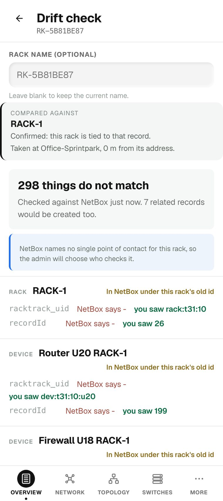
The answer, where it is used. Compared against RACK-1, confirmed, and where the photograph was taken.
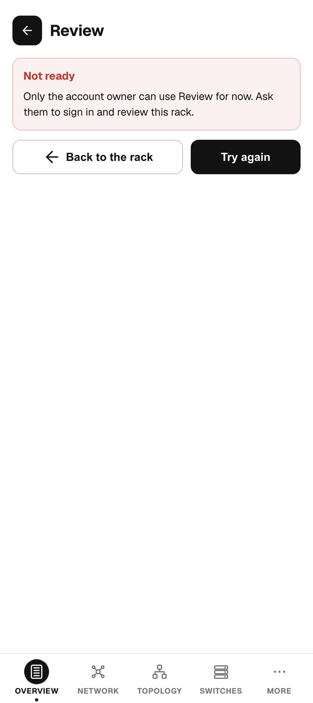
One box at a time. The rack drawn top down, what the engine proposes, and a confirmation that belongs to the person.
05 - The network
Asking the equipment what it is, from the phone standing next to it
The server lives on a public host and has never been able to reach a switch on a customer's private network. That is the whole history of "the probe never reached it". The phone standing in front of the rack is already on that network, so the phone does the asking - and everything downstream cannot tell the difference.
05.1
Reading a switch from the phone
Live
The phone asks each managed switch about itself over the standard monitoring protocol, on the network it is already standing on.
How it works
A small piece of each platform does one thing - send a message, hand back the reply - and knows nothing about the protocol itself; everything above it is written from the published specifications rather than taken from a package. The reading is filed on the server exactly as though the server had taken it, so the comparison, the report and the drift view cannot tell who asked.
Why it is there
Adding somebody else's networking package to a tool that is pointed at customer infrastructure means adding their supply chain too, and the part of the protocol actually needed here is small and completely specified.
Where it stops
The command that changes a switch is deliberately not implemented anywhere in the product. A read-only tool is read-only in its transport, where the guarantee is structural rather than a matter of discipline. From the phone it speaks the common version and the simplest secure one; a fully hardened switch is read by the server-side path.
05.2
What is asked, and what it is used for
Live
Four families of standard questions, chosen so one path covers every managed switch regardless of make.
How it works
What the equipment says it is - the model and serial stated by the device, which no photograph of a sticker competes with. Its real port list, with speed, duplex and what is up. What each port can see at the other end, which is how a cable becomes proven rather than drawn. And its own name and description.
Why it is there
These four answer the questions a photograph cannot, and they are the same on every vendor, so nothing here is written per make.
Where it stops
Unmanaged switches and patch panels answer none of it, and those stay the camera's job permanently. Where no standard question covers a value - copper against fibre, flow control - the field is left empty rather than filled in.
05.3
The switch inventory and its credentials
Live
A rack has a list of switches, not one switch - and their credentials are handled as credentials.
How it works
A stack member, a top-of-rack and an out-of-band switch all answer differently and all three matter, so each is its own entry. Credentials are encrypted with a fresh value each time before they touch the disk. Testing a password and reading a switch are separate actions.
Why it is there
A wrong password should come back in a second from one small question, not after a full walk of a 48-port switch - and somebody entering credentials for four switches wants to know about the typo on the second before starting the third.
Where it stops
The screen is told whether a password is held, never what it is: a password box can be replaced, never read back. A technician may add a switch to their own rack and file what the phone read; setting switches up and holding their credentials stays with the admin, and the refusal says so in plain words.
05.4
Declaring what no protocol can read
Live
Unmanaged switches and passive equipment, recorded by the only source there is - a person.
How it works
They are either typed in, or picked from the switch-shaped boxes the camera already found and named - each offered with a crop of the real photograph rather than a bare row of text, and with the camera's own guess prefilled unless that guess is "unidentified", which is no help.
Why it is there
An unmanaged switch has no brain to ask, over any protocol, ever.
Where it stops
These are kept apart from the switches that have credentials, because mixing them would put a "no password stored" warning on a device that can never have one.
05.5
Port history and what changed
Live
A timeline per port: when it went down, when something new appeared on it, when its speed or its neighbour changed.
How it works
A snapshot is written only when something actually changed, plus one row per changed field - so "what was the state on Tuesday" and "what changed, and when" are both answerable. Readings taken by the phone feed the same history as readings taken by the server, so a switch nobody can reach from outside still has a history.
Why it is there
Field-by-field differences are unreadable; events are what a person actually wants: this port went down at 14:02 and something else answered on it at 14:40.
Where it stops
Polling is hourly rather than every minute, and that is deliberate: the switches in question allow one session at a time and do not release it when the connection drops, so frequent polling meant a person's own check had to fight the poller for access. A host that is genuinely dead backs off rather than retrying for ever.
05.6
Firmware, and whether it is current
Live
The version running on a switch, checked against what the vendor publishes.
How it works
Two sources feed it: a local table of vendor releases, and a lookup that asks the vendor's own site. Every determinate outcome is an answer the screen can render - current, behind by a version, or "this vendor needs a login, here is the link".
Why it is there
The previous version treated every unclear lookup as an error, so a switch whose firmware had just been read live still showed "could not check right now" when the real answer was that the vendor's portal needs an account.
Where it stops
Neither source is allowed to invent a version. The local table is used only when it is provably talking about the model asked for, with a believable version; vendors with no published list say so plainly.
05.7
The rack report
Live
The whole rack in one document: every device, and for a managed switch every port with its state, its network, the cable it carries and what was heard on it.
How it works
Where a box is matched to a switch, its ports come from the switch; where it is not, they come from the camera. What a person typed is folded in, so their brand and model show rather than "unidentified". The summary is built in the order it is read: a one-sentence verdict, then ranked actions each carrying its evidence, then the facts, and then what could not be checked.
Why it is there
The last section is not optional. Without it a short summary reads as "all clear" when it may only mean "we could not see" - and on a rack where the labels failed on half the faceplates those are very different statements.
Where it stops
Nothing in the summary guesses. A rule that cannot prove its claim from the data produces no finding, and the reason goes into the gaps list instead. There is no language model anywhere in that path: a wrong summary is worse than no summary.
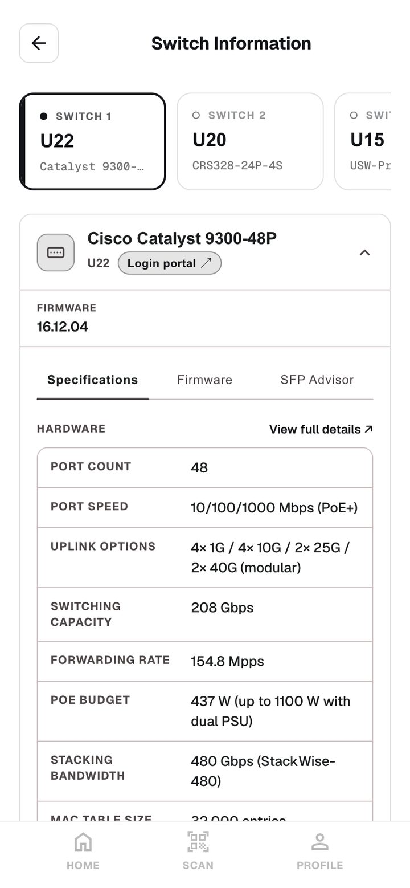
One card per switch. Identity paints in about twenty milliseconds, the faceplate in about a second.
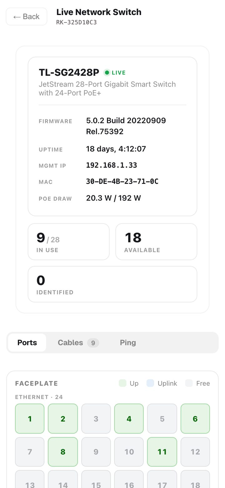
The ports as the switch reports them, not as the photograph guessed them.
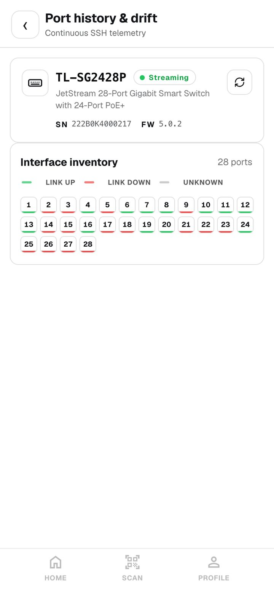
What changed, and when. Events rather than a wall of field differences.05.8
Asking a discovery system what is on the wire
Built, not in the menu
The one rack view that asks the network itself rather than inferring from a photograph.
How it works
It takes the rack you scanned and asks a discovery system which of its devices it can currently see, matching first by management address, then by name, then loosely by model. A matched device can be opened to pull its real port table: grouped by network, up or down per port, and how many addresses have been learned behind each one. Passive panels are dropped, because copper never appears as a neighbour.
Why it is there
It settles "is this link really up" with the switches' own answer.
Where it stops
Honest status: it works, but nothing in the product links to it any more - the rack's own tabs were cut back to five steps and this was one of the two that left the menu. A device it cannot match cannot be opened at all, and it does not refresh on its own.
05.9
Tracing a cable, and the panel nobody can ask
Live, partly built
Standing at a rack with a cable in hand: what is on the other end.
How it works
Pick a socket and the switch is asked what that port can see: the neighbour its discovery protocol reports, and the addresses it has learned there. A named neighbour gives a device, its port and its address; learned addresses alone give the equipment maker, and several addresses on one port read as an uplink rather than one device. It is drawn as two hops.
Why it is there
It answers the question at the moment it is asked, without a cable schedule.
Where it stops
It shows the logical layer only. Anything passive in the middle - a patch panel, a wall outlet, the structured cabling - has no chip in it, reports nothing, and cannot appear. That is said in words on the screen rather than quietly omitted, and where rack data offers a panel as a neighbour it deliberately reports none, because presenting cabling as network adjacency misleads. The fuller connected-cables list went when the live ports screen was removed.
05.10
The lab switches
Owner only
A small set of test switches, virtual and real, so that what the product gets back from real equipment can be proved on demand.
How it works
The owner opens one and gets the same full audit a live switch view shows: identity, faceplate, power over Ethernet, networks, neighbours and the learned address table. The browser only ever sends a device number - it never sees an address or a credential. A request tells the background poller to stand aside, because these switches allow about one session at a time, and results are cached and stamped with their age.
Why it is there
Claims about reading switches should be demonstrable against hardware, not asserted.
Where it stops
Owner only, enforced on the server rather than by hiding a menu entry. It never writes to a switch. Empty speed and power readings on virtual nodes are the truth, not a failure: a virtual node never negotiates a link and has no power hardware.
05.11
Specifications and the right optics
Live
Datasheet figures for an identified switch, and a shortlist of transceivers and cables that will actually seat and link.
How it works
Given a make and model - read from the rack or typed by a person - the specification tab answers from a cached record in milliseconds when it knows the model, and reads the manufacturer's own product page when it does not. Where the make and model came from a photograph rather than a person, a garbled model is retried as its nearest real one. The optics tab works out what kind of cage that switch has from the vendor's own material rather than a fixed table, and sizes the advice to the number of cages the camera counted.
Why it is there
Buying the wrong transceiver is an expensive, slow mistake, and the switch in front of you is already identified.
Where it stops
Neither will answer without both a make and a model - they ask for the missing half rather than guessing. If a clean specification table cannot be read, the link to the vendor page is given instead of invented numbers. The optics advice is a recommendation, not a price, a stock check or an order.
06 - The record
Comparing with the customer's database, and earning the right to write
The comparison turns a rack into sixteen kinds of record and lines them up against what the customer already holds. It can create and it can correct. It can never delete, never rename what is theirs, and never write anything a person has not approved.
06.1
The comparison
Live
A read-only difference between a rack as photographed and the rack as recorded, produced before anybody is asked to decide anything.
How it works
Every object RackTrack knows about maps onto one kind of record, and carries two things the customer's database has no home for: a stable reference of our own, and a note of how the fact came to be known. The comparison performs no writes at all and returns exactly the difference the write would apply.
Why it is there
A preview that writes anything - even a marker - is not a preview. The whole workflow depends on being able to look before anybody commits.
Where it stops
Because it writes nothing, it does not even create the small marker field it uses to recognise its own records. If that field does not exist yet everything reads as new, and it says so out loud rather than letting the number mislead.
06.2
How strongly a fact is known
Live
Every value carries how it came to be known, and that decides what the customer's record is told.
How it works
Strongest first: a person typed it; both ends of a cable reported each other; the equipment stated it about itself; one end only; an address table; read off a photograph; seen in a photograph. Proven things are written as connected, camera-only things as planned, so the customer can filter for exactly what RackTrack was unsure about inside their own tooling.
Why it is there
A record that cannot say how confident it is forces the reader to treat everything as equally true, which is how bad data spreads.
Where it stops
A conflict is never exported at all. A disagreement is a finding for review, not a fact to write down.
06.3
Finding records the customer typed themselves
Live
Recognising the equipment already in a customer's database - the rows somebody typed when the rack was built, which are most of them.
How it works
A rack is looked for by the customer's own rack identifier and then by name, inside one site. A device is looked for by serial, by asset tag, by the shelf the record itself states, and by name. Every lookup asks for two rows and refuses when two answer, naming both.
Why it is there
Until this existed, the only way anything could be found was RackTrack's own marker, so a rack somebody filled in by hand was invisible: every box was planned as new, the database refused the ones that collided, and the equipment already recorded could not even be reported.
Where it stops
The guarantee is not that it always answers - it is that it never names the wrong one. A name finds a record and proves nothing about the hardware in it. "Nothing there" and "we could not ask" are kept strictly apart, so an expired token never reads as an empty record.
06.4
Binding, and what a bind may never do
Live
Tying a box in a photograph to a row in the customer's database, with the limits of that tie written into the product.
How it works
A bind adds RackTrack's own reference to the customer's row and marks the row as bound, so the protection survives even if everything on our side were lost. Gaps the scan can fill - a serial the switch published, an asset tag, a status, a description - still reach the admin as an ordinary change to approve.
Why it is there
Filling a gap in a record is the point of the whole system. Renaming somebody's rack is not.
Where it stops
The name, the site, the shelf, the height, the model and the role are theirs and are reported rather than written. An earlier design let a bind rename a customer's rack to the alias a technician typed and move it to a site of our making; it was refuted four times over and the refusal now lives in the code.
06.5
Claiming what the record already holds
Live
Treating "that already exists" as the ordinary case it is, rather than as a failure.
How it works
When the database refuses to create something because the customer already has it - a manufacturer, a role, interfaces somebody made by hand - it is looked up by the key that caused the refusal, and if exactly one answers, our reference is added to it. Only that reference is added: nothing of theirs is renamed, moved or re-parented.
Why it is there
A real write of 275 objects finished as failed on eight refusals, and not one of them was wrong: the customer already had those rows.
Where it stops
Racks and devices deliberately have no such key. A device on a shelf is somebody's asset, and claiming it because the position collided is exactly the mis-merge this refuses to make. Two answers is left as a failure rather than a choice.
06.6
Making room before moving anything
Live
Writing a whole rack's worth of moves into a database that checks one change at a time.
How it works
Devices that are about to move are lifted out of their shelves first and then placed, so no single step ever collides with a shelf that is about to be vacated. Anything lifted whose own change then failed is put back, and if the old position has been taken meanwhile it says so rather than guessing.
Why it is there
A better shelf reading renumbers a rack, and those moves simply cannot be written in any order without this.
Where it stops
A device lifted out keeps its rack, its site and everything else - it is out of a shelf, not deleted. If a write dies between the two steps, the next comparison reports the shelf as something to set, and a person approves it again.
06.7
Equipment the record holds that the scan did not see
Live
Reporting what is missing from the rack without ever removing it from the record.
How it works
Anything the record holds for this rack that the photograph did not see is listed, saying whether RackTrack or the customer wrote that row, with a recommendation to check the rack before marking anything offline. Three things are not counted as gone: a row this scan carries, a row a person bound this scan to, and a row a box in this scan plainly answers for.
Why it is there
A tool that removes production records loses all trust the first time it is wrong, and it will eventually be wrong.
Where it stops
It reports. Nothing here deletes, patches, or even reads a device into the write path, and it is scoped to one rack.
06.8
The write
Live
The only path from an approval to a change in the customer's database, with four things true before it touches anything.
How it works
The plan is approved; what would be written still matches what the approval signed; the record itself has not moved, checked by running the whole comparison again against the live database; and at least one item a person decided is approved. Objects are read before and after and kept with the plan, so the record shows what it said, what was written, and what it says now.
Why it is there
An approval is a signature on a specific list. One more item rejected afterwards, and the approval no longer covers what would be written.
Where it stops
Half a write is treated as ordinary: what went through stays through, the plan is marked failed, the admin is emailed exactly what was refused, and it can be run again under the same approval. A write that finished is not a write that landed - only a fresh scan, compared again, completes it.
06.9
The same rack into ServiceNow
Live
For customers whose system of record is a service management platform rather than a network database.
How it works
One declarative table says what that platform calls each thing, and how each fact is carried: a plain field, a custom column, a reference to another record, or a separate relationship row - which is how that platform says "contains" and "connects to". A field with nowhere to go is recorded as having nowhere to go.
Why it is there
Both translations stay auditable and neither hides inside a writer loop. A gap that is written down is visible; a gap that is omitted looks like an oversight.
Where it stops
Sign-in there is done the way a browser does it, because that platform's current release blocks the simpler method. The connection belongs to the organisation, is encrypted, and is set once by an admin.
06.10
Aligning ports to records that already exist
Live
Making sure a port read from a photograph lands on the record that already carries that number, rather than creating a second one.
How it works
When a scan is turned into a comparison, each port whose number one of our own records on that device already carries takes that record's reference. Any other port keeps its own, unless that one is taken. Nothing is written by this step - it changes the comparison, not the record.
Why it is there
A port's identity is the number printed beside it, not its place in a list. On one 52-port switch that difference was nine refusals after every other fix had been made.
Where it stops
It looks only at RackTrack's own records, and only on the device the port belongs to. If the database cannot be reached it simply skips, and the camera's own numbering stands.
06.11
Data sources: one address, and we work out the rest
Live
A customer types the address of their own system and RackTrack works out what is there, without a password.
How it works
A service management platform names itself twice - in its hostname, and in the challenge it sends back to a request with no credentials. A network database has a status page it guards, so a reply carrying its version identifies it, and so does a refusal, because only something that has that page bothers to protect it. Anything else is treated as a plain record system, and that guess is made last.
Why it is there
The form used to make somebody pick their product from a list first, and picking wrong gave a connection error that named nothing useful.
Where it stops
"Did not match" and "never answered" are kept apart, because reporting a type for an address that is simply down sends somebody to check credentials on a system that was never there. The answer is a suggestion; signing in is what confirms it.
06.12
Refusing an address that should not be fetched
Live
The safety around a feature whose whole job is to fetch an address a user typed.
How it works
Cloud metadata addresses, loopback, private ranges, link-local and reserved ranges are refused - metadata first, because link-local counts as private and asking the wrong question first would classify the single most dangerous address in cloud hosting as merely private. The name is resolved and every address it resolves to is judged, and every redirect is judged again.
Why it is there
An address typed by a user and fetched by a server is the definition of a forged request. A host that passed at sign-in can answer with a redirect to somewhere nobody judged.
Where it stops
It never falls back from encrypted to unencrypted: a certificate that cannot be verified is a reason to stop, not a reason to send the same password again in the clear. Private addresses are allowed only where the deployment is inside the customer's own network, and a hosted one says so early rather than timing out.
06.13
Where a customer's connection details live
Live, partly built
One place an admin stores the address and credentials for the customer's own system, for the whole organisation.
How it works
Credentials go into an encrypted blob; only the harmless parts - name, type, dates - stay readable, so a profile can be renamed or replaced but never read back out. Profiles belong to the organisation, so one admin sets them once and everybody's work uses them. An owner with no organisation keeps a personal set.
Why it is there
Nobody standing at a rack should ever be asked for a token.
Where it stops
Honest status: six kinds can be saved, and only two are actually used today - the record system used for the comparison and the write, and the ticket system. Saving one of the other four stores credentials that nothing reads yet. Only owners and organisation admins may change them; a technician is told who to ask.
06.14
The drift check, as the technician sees it
Live
One screen answering one question - does this rack match the record - and handing the answer to whoever decides.
How it works
It lists what differs in three plain phrases: not in the record, different in the record, or in the record under this rack's old identity. Above that it shows its working: whether the rack was confirmed, matched by a label, matched by the equipment inside it, or matched because it is the only rack in the room - and it says "probable, not confirmed" where that is the truth. Where nothing decides, it offers the two or three racks it narrowed to and a person picks. The technician adds a note and sends it, and the screen becomes their window on what happened next.
Why it is there
The person standing at the rack is not the person allowed to change the record, and this is the whole of their part.
Where it stops
It has no write button and never says export. It refuses to start until an admin has connected a record system, and says who to ask rather than showing an error a technician cannot act on. Where two or more racks fit, it will not choose.
Checked against the live system
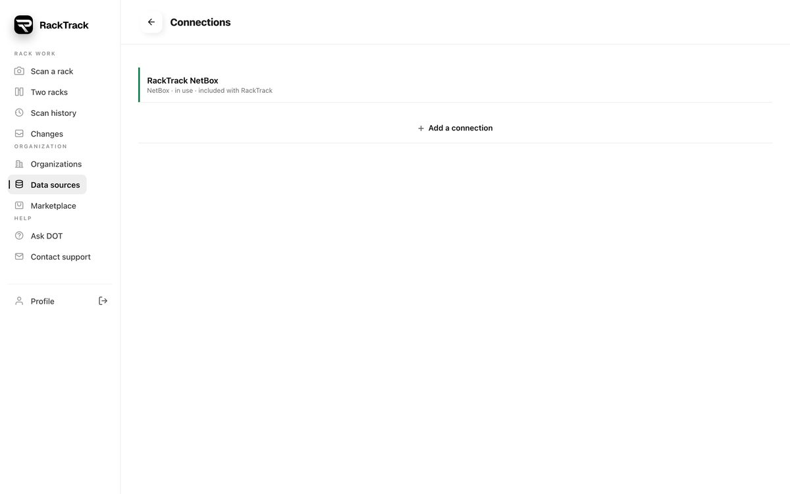
One box, one button. The type and the fields fill themselves in.
Typed in
Answer
dev266363.service-now.com
ServiceNow instance name filled in
demo.racktrack.ai/netbox
NetBox found by asking it, address filled in
169.254.169.254
Refused cloud metadata address
10.0.0.5:8000
Refused private address, from a hosted server
http://example.com
Refused the password would travel unencrypted
Checked on the live server, 19 September 2026.
07 - The workflow
Somebody having looked is not somebody having approved
The workflow was frozen in writing on 11 September 2026 and everything since has been built to it. The technician assigns nothing, the admin assigns, the assignee resolves, the admin and the approver decide, and only then is anything written. Each step carries an explicit list of what that person cannot do.
07.1
One difference, three separate records
Live
A difference, the job of fixing it, and the permission to write it down are three different things, kept apart on purpose.
How it works
The difference is one record, the work ticket is another, and the approval is a third. Statuses move through a table with a guard and a named actor on every move, so a state cannot be reached by anything but the move that is allowed to reach it.
Why it is there
Conflating them is the failure mode: a resolved ticket starts to look like permission to write, and one day somebody writes on it.
Where it stops
Nothing moves a plan out of cancelled, duplicate or accepted-as-an-exception. A refusal is a sentence a person reads, not a code.
07.2
Assigning, and the tickets that follow
Live
Each difference becomes somebody's job, with a real ticket in the customer's own service platform where one is connected.
How it works
The person a rack names as its contact in the record is the default, and the admin can pick somebody else. A whole rack can be assigned in one move. Every ticket carries a correlation built from the rack and the thing that differs, never from the scan or the date, so a monthly scan comments on the existing ticket instead of raising a duplicate.
Why it is there
By month three the assignee has one ageing ticket rather than four identical ones.
Where it stops
Our row is the record and the external ticket is a mirror of it: if that platform is unreachable, or none is configured, the ticket still exists here and the person is still named - it simply has no external number yet. Once it exists, that platform owns whether it is open or closed, and we never argue with it.
07.3
Nine questions instead of two hundred and ninety
Live
Keeping the number of decisions proportional to the number of real changes.
How it works
A port follows its device: a new switch brings its ports with it and stays one decision. Supporting records - manufacturers, models, roles, sites - are not decisions at all; they are applied when something that needs them is approved, and they are listed so nothing is hidden.
Why it is there
A new rack with two 48-port switches once put 290 questions to an admin and would have raised 290 tickets. Asking someone to approve the same manufacturer forty times teaches them to approve without reading, which is worse than not asking.
Where it stops
A port on a device that was already in the record stays a decision of its own, because that is a real question about the rack, and it is never waved through with the rest.
07.4
Separation of duties
Live
The rule that stops one person carrying a change all the way from finding it to writing it.
How it works
The approver may never be somebody who resolved one of that plan's tickets. Where an organisation marks a plan's risk as critical it needs two signatures, and the second must come from a different person. An approval counts only for the current round and only if it signed today's list.
Why it is there
It is the difference between a record somebody checked and a record somebody agreed with themselves about.
Where it stops
It is enforced on the server, not on the screen. In the live walkthrough the admin who resolved the tickets was refused when they tried to approve, and the approver was refused when they tried to write.
07.5
Proving the fix before writing it down
Live
A re-scan of the rack, compared again, before an approval and after a write.
How it works
A plan is a photograph of one disagreement. By the time somebody has been to the cabinet and reported back, that photograph is hours old, so the only honest way to know it still holds is to take another one. After the write, every written item must now match, and anything that still differs reopens the plan.
Why it is there
A verification that passes with a caveat is not a verification: one failure fails it.
Where it stops
Rejected items are excluded from the check after a write, because something nobody approved was never sent and of course still differs. Only an organisation admin may skip the re-scan, and skipping needs a reason.
07.6
Clocks that respect the working day
Live
Four timers - to accept, to start, to answer, and to approve - that measure the promise rather than the wall clock.
How it works
Targets come from the organisation's own settings, with a sensible default table by priority. They run in the data centre's working hours and its own time zone, which is the whole reason that is stored. Eighty percent warns, a hundred breaches, a hundred and twenty escalates.
Why it is there
A ticket raised at five on a Friday is not late at five past nine on Monday, and a clock that says otherwise makes the whole report untrustworthy.
Where it stops
A plan waiting on somebody else pauses only its answering clock; a plan inside an agreed maintenance window pauses every clock, because nobody is late for a change everybody agreed to. A pause moves the target out by exactly what it cost.
07.7
Differences that are not faults
Live
Writing down what is deliberately different, so every scan does not ask about it again for ever.
How it works
One person records what is accepted, why, for how long, and when it will be looked at again - narrowed to an organisation, a site, a single rack, or one kind of item. A matching difference on a later plan is marked as accepted and asks nobody.
Why it is there
A lab switch meant to sit in the wrong shelf, a model the customer keeps under their own name, serials left blank on purpose: without somewhere to say so, they are raised for ever and the whole report loses meaning.
Where it stops
It expires, and expiring ones are listed, which is what stops an exception quietly becoming permanent. Revoking one does not un-mark the plans already filed, because those were answered at the time and history is not rewritten. An exception narrowed to a field can never hide a new device.
07.8
Notices, reports and the audit trail
Live
Everybody who should know, knows; every number can be opened; and every move is on the record.
How it works
In-app notices are the record and email is the courtesy, with the attempt kept so an admin can see a notice was written and why it never left. Eight reports cover backlog, timeliness, quality, trends, who resolves, who approves, what was written and what is accepted. Every transition is written to the same audit table every other sensitive action lands in.
Why it is there
A report that says seven are waiting and a list that then shows six is worse than no report, because somebody spends an afternoon looking for the seventh. Every number opens the list it counts, through the same query.
Where it stops
A person may switch their own email off, except for three notices that always go out: a failed write, a breached promise, and an escalation. A broken audit table must never stop an approval or a write.
Proved on the live system, step by step
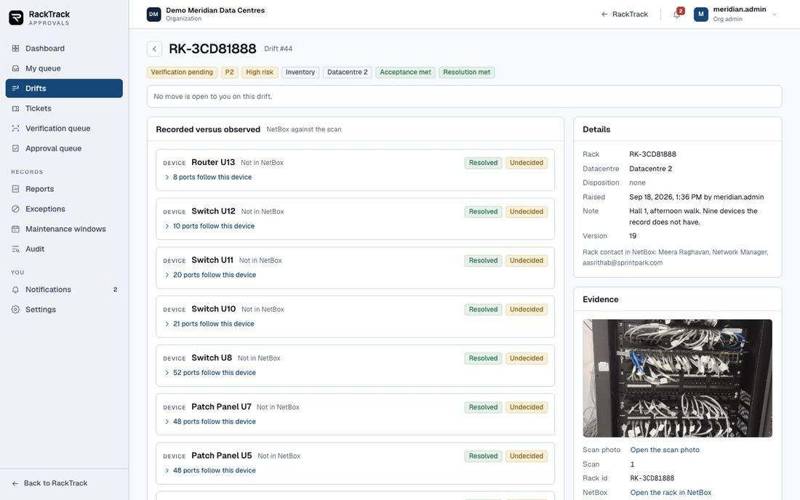
Resolved with a finding. The assignee reports what is actually true at the rack - which is not yet permission to write it down.
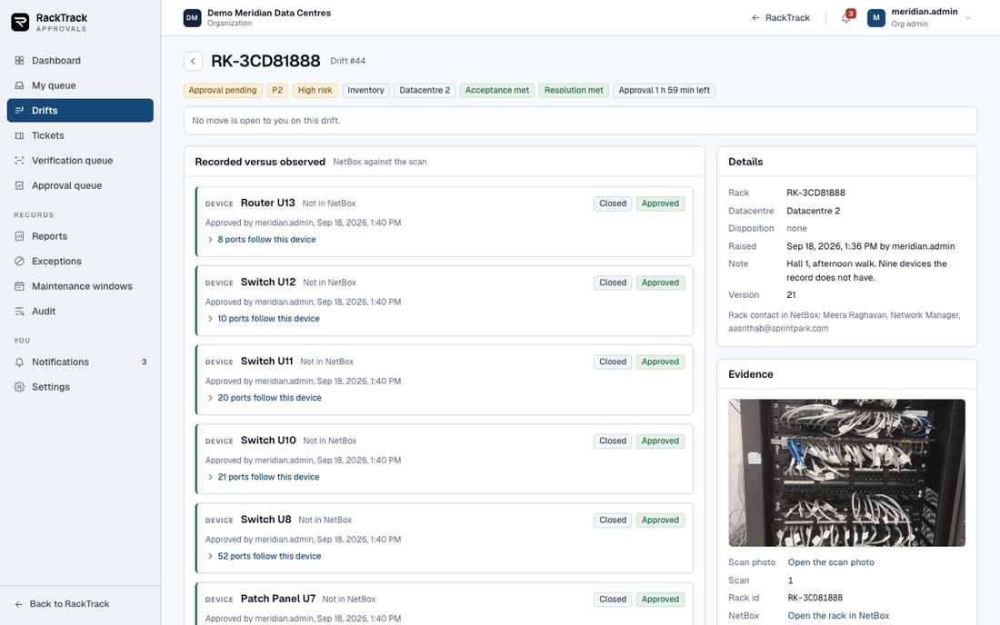
Refused. The admin who resolved the tickets is refused when they try to approve them. The rule is in the server, not the screen.
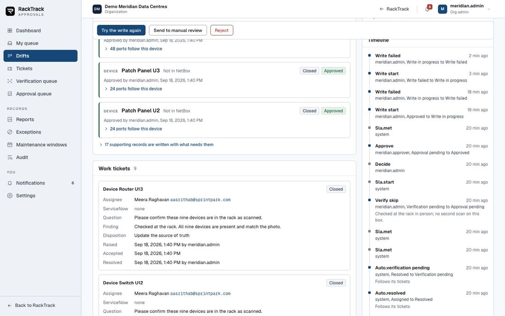
Told plainly. What the write did, and exactly what the customer's database refused - in sentences rather than error codes.
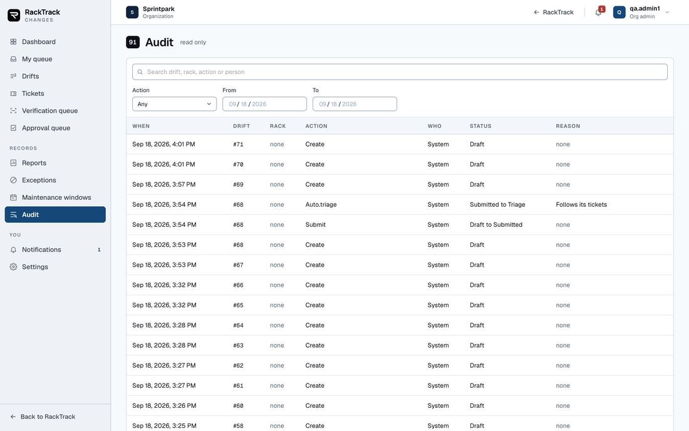
On the record. Who sent it, who assigned it, who resolved it, who approved it, who wrote it, and when.
08 - Running it day to day
Setting a customer up, and the screens the work is watched from
A site in RackTrack is a data centre: one identity, one set of people, one set of racks. Around it sit the screens for the people who run it - the organisation console, the portal, the operations console - and the ordinary things everybody uses: history, reports, sharing, corrections.
08.1
First-run setup
Live
Getting a new customer from nothing to a rack that can be scanned, in one popup that asks one thing at a time.
How it works
Ten steps, shown one at a time with only Back and Next, and a red star against what is genuinely required. The site and its address - which is also what drives the location check and the working-hours clocks. Then the rooms, halls, floors or rows, named however the customer names them. Then the racks in each room. Then people and roles, the record system this organisation uses, and optional detail: contacts, vendors, naming conventions, network and monitoring settings.
Why it is there
It is shown to the organisation's admin alone, on their first sign-in, on the phone or on a laptop. A technician is never held at a setup screen.
Where it stops
Nothing is invented: a field the admin did not give is stored as empty. Everything is editable afterwards under organisation settings, and a card lists what is still missing. Monitoring credentials entered here are encrypted and never travel back out.
08.2
Organisations, sites, members and roles
Live
Many customers on one system, with every rack, photograph and correction belonging to exactly one of them.
How it works
Platform owner, then organisations, then sites, then the people in a site. The console lists organisations - all of them for the owner, their own for an organisation admin - and drilling in shows that organisation's sites, members and recent scans, with controls to add a site, add or edit a member, and issue an invite link. The owner can approve, rename, deactivate or remove a whole organisation.
Why it is there
Scope is decided on the server on every request, never in the browser: a member sees their own scans, a site manager their site, an organisation admin the organisation, the owner everything.
Where it stops
Nobody can see sideways into another customer, and a request for somebody else's rack answers "not found" rather than "not allowed", because "not allowed" would confirm that the rack exists. There is no self-service sign-up: the ways in are an issued account or an invite link. Six roles are in play once the approval workflow is counted - owner, organisation admin, site manager, member, approver and auditor.
08.3
The owner and manager portal
Live
A separate application, on its own address, for the people who run RackTrack for an organisation rather than the people standing at racks.
How it works
It talks to the same server with the same account and session, so nothing in it is duplicated or mocked. Its pages: an overview; attention, which derives what is currently wrong from the audit trail, the scans, the polled switches and the member list, each card naming its source; racks and one rack in detail with the photograph and its overlays; inventory; patching; switches; my checks, a technician's read-only window on the drift they sent; approvals; incidents; the audit log; people; sites; organisation settings; and, for the owner, every organisation and the platform's own numbers. It carries its own guide whose every chapter is a real screenshot taken with that role's account.
Why it is there
Watching a team's work, checking it and administering it wants a real screen, and the field application should stay about scanning.
Where it stops
It shows no panel standing in for something the server does not have - where the wiring is synthetic, the portal does not draw it. The owner's view of a customer is deliberately read-only, with one clearly labelled way in. It is deployed by hand rather than by the demo deploy script, which is worth knowing before a demonstration.
08.4
The Changes application, screen by screen
Live
The desk where a difference is triaged, given out, verified, decided and written - with the clocks and the paper trail an audit asks for.
How it works
Thirteen screens: a dashboard of the server's own counts where every tile opens the list it counted with exactly those filters; my queue; the global list of differences, where every filter lives in the address so a tile, a report figure and a shared link all open the same list; one difference start to finish; tickets; a verification queue and an approval queue; eight reports; accepted differences; maintenance windows; the audit log; notices; and the organisation's own settings for targets, working calendar, which risk levels need two approvals and escalation.
Why it is there
It is served as another page of the same site, so whoever is signed in to RackTrack is already signed in here, and it keeps the scanning application uncluttered.
Where it stops
What the rail offers is decided by what the server says this person can do, and what they see is scoped to their organisation and, for a technician or site manager, their own site. The old in-app approval screens are gone: those addresses now show a one-line notice and a link across.
08.5
The operations console
Owner only
One screen answering what is happening across every customer right now, and why something failed.
How it works
Two tabs over one header. Operations counts from the permanent audit trail: scans today, active people, success rate, accuracy from human corrections, failures, a live feed of recent actions, top scanners, scans per organisation, and full tables of accounts and organisations. Logs reads the server's own runtime diary, with severity filters, search, and one line expanded to its full technical detail and request number.
Why it is there
The alternative is opening a database or a remote session, which nobody does at the moment they actually need the answer.
Where it stops
The two records are never mixed, and clearing the runtime log never touches the audit trail. It pushes nothing - no alerts, no email. Today means a day in universal time, not local. The runtime log keeps about a week and is capped, so it is not an archive.
08.6
Scan history and profile
Live
Reopening a rack somebody scanned last week without photographing it again, and being sure which account you are working in.
How it works
Profile shows who you are signed in as, your five most recent scans as tappable rows, an administration block for admins, which record system is connected, and account actions including signing out everywhere. The full archive is its own page: searchable, narrowed to a week, a month, a quarter or all time, sorted newest, oldest or by rack, grouped by day and paged.
Why it is there
It is read from the server against your account, so the same history appears on any device you sign in to.
Where it stops
It is not stored on the device, so it is only as available as the server, and it is scoped by the same rules as everything else. Signing out everywhere ends the session you are using too.
08.7
Sharing and exporting a rack
Live
Getting the rack document to somebody who was not standing at the cabinet.
How it works
Three menus at the top of the report: download it as a print-ready file rendered on the server, as data, or as an archive a spreadsheet can load; check it against the record; or share it as a chat message or an email sent from RackTrack's own mailbox with the file attached, or as a link that opens without an account for a few minutes.
Why it is there
A report that cannot leave the phone is half a report.
Where it stops
The link is deliberately short-lived. The message and email routes will not guess a recipient - somebody types the address - and they depend on mail credentials on the server, so they fail with a message rather than silently. Writing to the record system is not offered here: that belongs to the Changes application.
08.8
The physical layer document
Built, no screen yet
One file per rack holding exactly what the scan produced, and nothing else.
How it works
It reads only what the scan already wrote - the device map, the labels with their positions, the rail chips, the per-box readings, a person's corrections, the room the picture was filed against - and assembles the rack's own identity, each box's label and make and model, every socket with its state, and every cable colour. Mangled labels are repaired using the shape learned from the ones that did read, and anything that cannot be repaired confidently stays unread.
Why it is there
It is the honest, single record of what one photograph produced - and it feeds the rack ladder that decides which rack a scan is.
Where it stops
Honest status: it exists and is used, but it has no screen of its own yet. It deliberately carries no serial, no asset tag and no comparison with a switch or a record system; its socket numbers are the order they were detected in, not the numbers printed on the panel.
08.9
Rack Book
A tool, not a screen
One form that asks for everything a record system holds about a rack, in that system's own field names, and hands back files that load with no translation.
How it works
Eight steps walk the whole rack - site and rack, makes and models and roles, devices with their shelf and face and serial, interfaces and panel ports and power, networks and addresses, cables with both ends, contacts, then export. A live elevation redraws as you type and flags anything overlapping or outside the rack, generators fill repetitive sets, and everything autosaves. A check list runs before export.
Why it is there
The pipeline needed a rack whose truth a person had typed, and typing it into the record system screen by screen was the only route.
Where it stops
It is an internal authoring tool, not part of the application, and it is not connected to any live system - it produces files and something else loads them. It refuses to export past a device that overlaps another or a cable end that names no port, because the target system rejects those halfway through an import.
08.10
Registering a rack into a service management system
Live, partly built
For customers whose system of record is a service platform: open a request rather than writing, and only write once it is approved.
How it works
When a scan finds a rack the records do not know, the difference is computed and a service request is opened against that rack. Its state is held per rack and can be read, refreshed, recreated or cancelled, a fresh scan updates it in the background, and a sweep re-polls open requests on a cycle. Only once it is approved is the inventory written, and the screen then shows what was registered.
Why it is there
The approval gate is the whole point. The application never presents itself as an exporter.
Where it stops
Errors coming back are stripped of the customer's own address before they reach a browser. The incident path that walks a device's containment tree and posts a merged note back is a command-line tool run by a person, not a button. Some detail fields in a registered inventory are still placeholders.
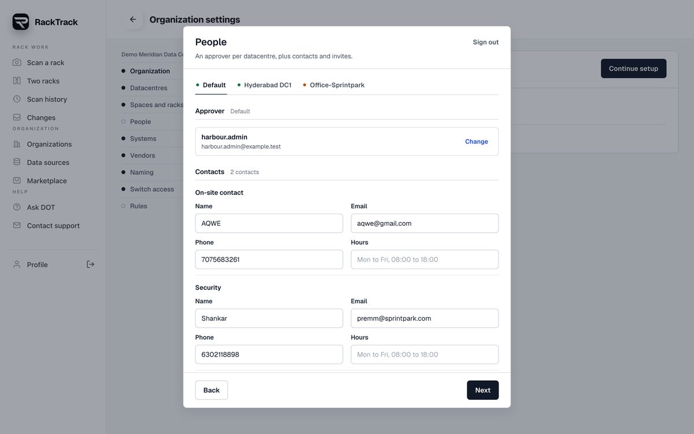
Setup. One step at a time, a red star on what is required, everything editable afterwards.
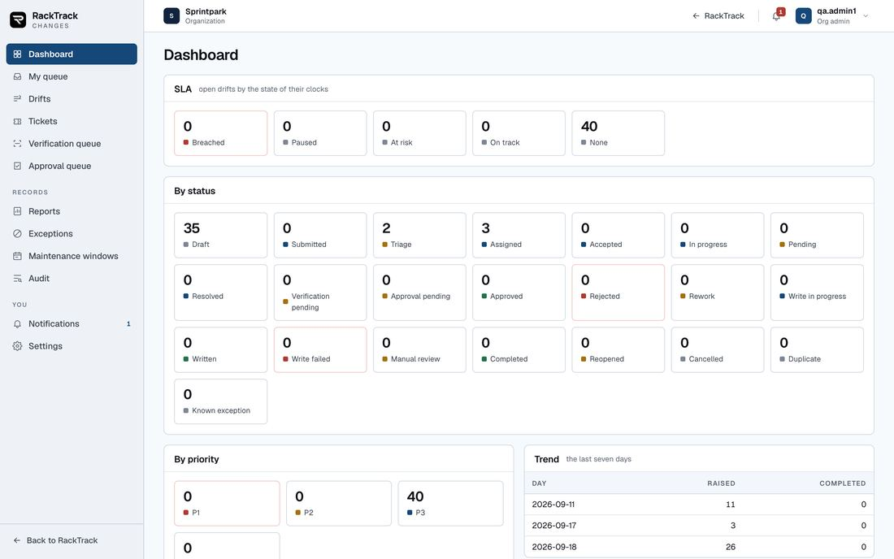
The desk. Every number opens the list it counted, with the same filters.
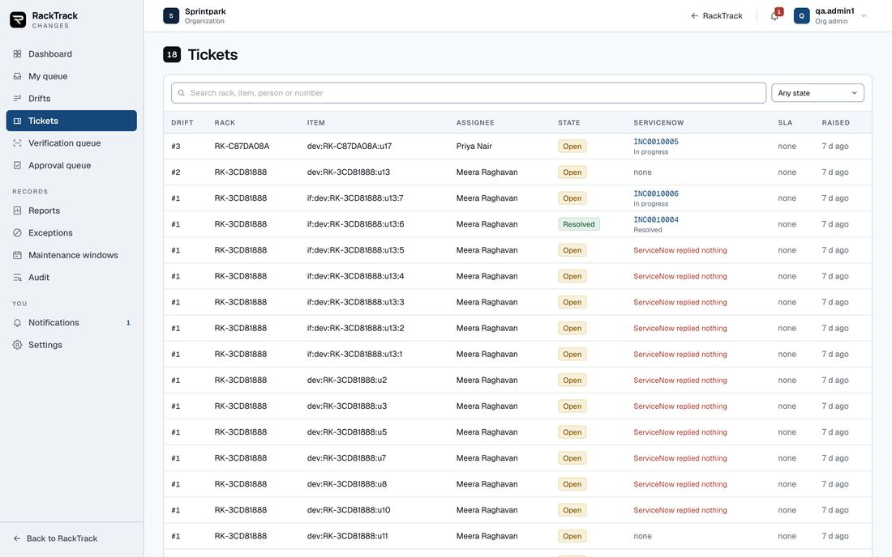
Tickets. Who holds each one, where it stands here and in the customer's own system, and its clock.
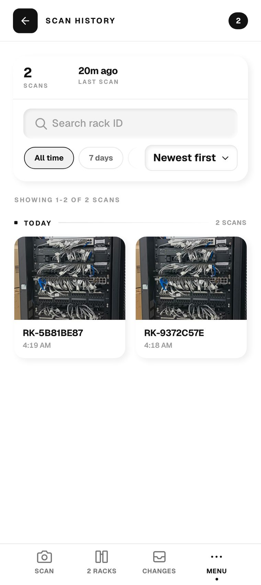
History. Every scan kept, searchable, and the same on any device.08.11
Getting people onto the system
Live
An administrator puts a named person on the system; nobody attaches themselves to somebody else's organisation.
How it works
An invitation names one address, one site and one role. The link shows which organisation and site the person is joining before they choose a username and password, and accepting creates the account already attached and signs them in. A forgotten password runs in four steps with a short-lived code, and the screen never confirms whether an address is registered.
Why it is there
Access to a customer's rack data is given, not requested.
Where it stops
There is no request-to-join. Invitations expire after seven days and are single use, and a site manager may only invite ordinary members. Creating your own organisation is no longer offered anywhere in the application - the way in is an issued account or an invitation.
08.12
Ask DOT, the in-app help
Live, knowledge is stale
Answering a documented question in the moment, from RackTrack's own written material, rather than making somebody wait for a person.
How it works
A question is matched against about 1,270 verified entries by measured search confidence, and that measurement - not a model's judgment - decides the route. A strong match is answered; a weaker one may be rephrased by a language model that is only allowed to work from what was retrieved; nothing close enough is declined and the person is offered a route to a human. What each person may see is decided from their role on the server. Every decline is logged, and that log is the list of what to write next.
Why it is there
It costs nothing to run, it never invents an answer, and a refusal is styled differently from an answer so advice and refusal are never confused.
Where it stops
It cannot see your racks, your scans or your switches, and it takes no action for you. Its real limit today is its content: the shipped knowledge was written in July 2026 and still describes two screens that have since been removed, so it will confidently explain things that are no longer there. That needs regenerating before it is put in front of a customer.
08.13
Corrections, and learning from them
Half live
A wrong reading looks exactly as confident as a right one, so the person in front of the rack can correct it - and that correction is meant to help the next photograph.
How it works
On the results screen a person can correct a device's type, its socket count, a socket type or a cable colour. The correction is written into that scan so it survives reopening, appended to a permanent log, and the disputed part of the photograph is kept as an example. It also goes into a visual memory, so a later scan of a closely matching box gets the remembered answer, marked with where it came from.
Why it is there
It fixes the scan in front of the person immediately, and it helps the very next photograph without waiting for anything to be retrained.
Where it stops
Honest status: the capture and the memory are live - there are 254 kept dispute crops - but the automatic retraining behind them has never promoted a model in this tree: all four models still sit at their baseline with no candidates. A correction is applied later only on a genuinely close visual match, and physical evidence still overrules it. There is no screen that lists what has been judged; the screen that used to show one was removed for quoting an accuracy figure off too thin a sample.
08.14
Marketplace
Live, partly built
Surveying racks turns up surplus and shortfall, so an organisation can sell what it no longer needs and find what it does.
How it works
Three ways to sell: list the item here and let people browse by text, category, kind and condition; post a wanted item so sellers can find you; or take a hand-off that builds a search link for that make and model on an outside marketplace. Around a listing sit an order, a message thread between buyer and seller, saved searches with alerts, flagging and moderation.
Why it is there
The inventory that tells you what is spare is already here.
Where it stops
Every route is refused to anyone who is not an owner or an organisation admin, so a technician cannot browse or list. Payments and both outside-marketplace integrations do nothing until their credentials are configured, and with no payment provider the checkout offers the non-payment path instead of a broken button. The hand-off is a search link, not a listing - nothing is posted on your behalf.
09 - The proof
Your own rack, end to end, on the live system
SP-HYB-RM01-R01-R1 - the cabinet in your office. Its record was loaded into the database from the sheets you wrote standing at the rack, and one photograph was run through the entire chain on the live server. These are the numbers as they came out on 20 September 2026.
711records created from your export
16 of 16devices read at the right shelf
14 of 16also given the right type
0of your records changed without a person
What was loaded, and how
One site, one room, one 24-shelf rack, ten equipment types, eight roles, nineteen devices, 151 interfaces, 192 panel sockets, 116 cables, the power chain and the wireless network - loaded exactly as you wrote them. A rehearsal ran first inside a transaction and rolled itself back, so the counts and every refusal were real while the database was left untouched. The loader can be run again and creates nothing the second time.
What the photograph read, against what you wrote
Your record
What RackTrack read from one photograph
Verdict
PP1 at U1-U2, PP2 at U4-U5, PP3 at U7-U8, PP4 at U10-U11
Four patch panels, every shelf exact
Match
CM1 U3, CM2 U6, CM3 U9, CM4 U12, CM5 U14, CM6 U16
Six unnamed rows at exactly those shelves
Placed
SW01 U13, SW02 U15, SW03 U17
Three switches, every shelf exact
Match
SW04 at U18
Found at U18, called a firewall
Wrong type
FW at U19
Found at U19, not named
Unnamed
ACT router at U20
Router at U20
Match
U21-U24 empty at the front, power strip at the rear
Empty
Match
Both wrong answers sit at the top of the cabinet, where a white firewall sits directly above a black switch. They are wrong about what the box is and never about where it is - and a person corrects either in one tap, after which the camera never overrides them again.
What the comparison did next
It recognised the rack by name, inside your site, and refused to bind on a name alone - saying so: a name finds the record and proves nothing.
A person confirmed it from the label taped to the cabinet. The location check agreed: taken at Office-Sprintpark, at its address.
It matched every box it found to your records by shelf - U20 to your router, U18 to SW04, U13 to SW01 - and wrote nothing, asking for each to be confirmed.
Once confirmed, the plan held ten bindings: the rack and nine devices, each marked as yours, with only RackTrack's own reference added. Your names, shelves, models and site were left exactly as you wrote them.
The 288 sockets read from the photograph were held back, because your record already lists the real ports under your own names. That is a rejection with a reason on the record, not a silent drop.
Where it stands
The plan sits with the ten bindings approved and the photographed ports open, waiting for the people whose job it is - which is what the separation of duties is for. The complete chain including a live write to the database was proved on a second rack earlier the same week.
The cabinet. One photograph, taken on a phone.The read. Every device on its own shelf.The comparison. Named record, confirmed, located - then the differences.
Three faults your rack found, all fixed the same day
What went wrong
Why
Now
Every device numbered three shelves too high
The cabinet frame runs on past the bottom shelf into the plinth and the castors, and the shelf ladder followed it down
The ladder stops at the cross rail - nothing mounts past it
A patch panel placed one shelf too low
Its cords hang down and stretch its outline with them, so a near tie went the wrong way
A panel takes the best run of adjacent shelves, and a near tie goes to the higher one
Confirming the rack was refused
A rack was being remembered with a box's fields, so it kept a shelf of zero and the live record gave none
A rack is remembered as a rack: name, rack identifier and site. It has no shelf
10 - Limits
What it refuses to do, and what it cannot do yet
A product that overstates itself in a demonstration loses the customer on the first real rack. These are the limits as they actually stand today.
Deliberate refusals
It never deletes anything
Not a record, not a switch setting, not a person's confirmation. Equipment that has gone is reported for a person to judge.
It never writes to a switch
The command that would change one does not exist in the product's network layer at all.
It never breaks a tie
Two candidates that answer equally well are both named and neither is chosen. A tie is never broken by sort order.
It never turns a guess into a fact
A camera's reading is shown as probable and is never written into a customer's record as certainty.
It never invents a value
A field nobody stated is stored as empty rather than filled in, and is never cleared on the way past either.
It never lets one person do everything
Whoever resolved a difference cannot approve it, and on a critical plan one signature is not enough.
Honest limits today
Limit
What it means in practice
A patch panel cannot be asked anything
No protocol reaches a passive panel. Panels are the camera's job permanently, and a cable's path through one is known only if somebody records it.
Unmanaged switches answer nothing
They are typed in by a person, or named from the box the camera already found.
The camera cannot see behind cables
A socket hidden by a bundle is not counted, and is never assumed empty.
Reading text off a faceplate is the weakest input, and the most load-bearing
Rack labels drive which rack a photograph is. A failed read is usually a resolution problem rather than a legibility one - which is why walking up and photographing one label works.
Equipment type from a photograph is not certain
On your rack, 2 of 16 were typed wrongly while all 16 were placed correctly. A person corrects it once and it stays corrected.
Several shelf and stitching rules are tuned on tens of photographs
They hold on the racks measured so far. A badly angled cabinet with invisible rails can still gain or lose a row at the extremes.
Only two rungs may state a rack outright
Correct, and it means a person is in the loop more often than a smooth demonstration implies.
Location answers which building, never which cabinet
By design. Indoors a phone is accurate to tens of metres.
The phone cannot read a fully hardened switch yet
It speaks the common version and the simplest secure one. The server-side reader handles the full set.
The server cannot reach a private network
Which is why the phone does the asking - and why the message now says so plainly instead of timing out.
A real rack produces a lot of differences
One 13-device rack produced 281, of which 255 were ports. Triage matters more than detection accuracy for the admin's day, which is why a port now follows its device.
The address of the server is fixed into each phone build
Moving a customer to their own server means a new build, not a setting.
Written down rather than quietly patched
Fourteen places where a screen and the server disagree were found while writing the engineering reference for the approvals application. They were recorded rather than patched, because each needs a decision about which side is right.
11 - How it was built
From a standalone tool to one product, in sixteen days
On 4 September 2026 there were two separate things: the mobile scanning product, and a standalone build that wrote to NetBox and had its own server. This is what happened between then and now - 166 commits, one branch.
Date
What changed
Why it mattered
4 Sep
The NetBox build folded in as one unit, behind the owner's account only
It had shipped with no sign-in at all and no separation between customers, so it was locked down until both existed
4 Sep
The phone reads switches itself, over the standard monitoring protocol
The server on a public host had never once reached a switch on a customer's own network
7 Sep
A whole switch in one read; firmware answered from the vendors' own lists
One pass now collects every fact a switch will publish
8 Sep
Label reading fixed - it had been failing silently since the first commit in the repository
Make and model returned to scans, and a read that took 27 seconds now takes under one
9-10 Sep
The comparison becomes a plan with a signature; tickets raised against the record
A write stops being a button and becomes something that has to be earned
11 Sep
The workflow frozen in writing; customers separated on every route
One sentence the whole team builds to, and no cross-customer access anywhere
15-17 Sep
Organisation setup; recognising which rack a photograph is; the frozen rules enforced on the server
The product can be handed to a customer who has nothing set up yet
18 Sep
The approvals application; finding the customer's own records; the trained shelf model; the panel model
The largest day, sixty commits. The product stops assuming it wrote every record it reads
19 Sep
Data sources work out the system from its address; the location step; re-reading a rack under newer models
Less to type, an honest check on which site, and old scans benefit from new models
20 Sep
The shelf ladder stops at the rails; panels placed by their faces; confirming a rack stops being refused; your rack loaded and read
All three faults were found on your own office cabinet, and fixed on it
The pattern worth noticing
Almost every fix in this history was found by running the real thing against a real rack and a real record, not by reasoning about it. The shelf ladder ran into the plinth of your cabinet. A write failed on a name that has to be unique per site. A hundred and twenty port renames failed in one write. Eight refusals turned out to be records the customer already had. Each one is now a test, so it cannot come back.
RackTrack Handbook - 20 September 2026.
Written from the product's own code and comments, its commit history, the documentation already in the repository, and the running system.
Screenshots are of the live demonstration server. Figures for the office rack are as measured on the day.